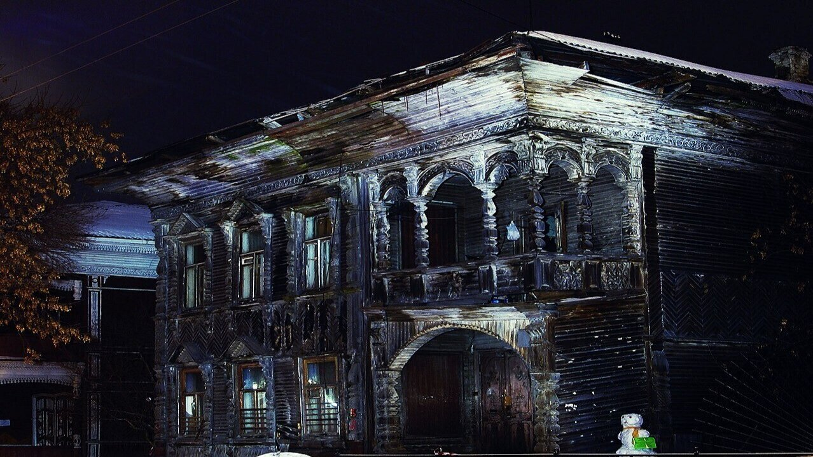

STEP 01
会員が掲示板に書く
投稿でも返信でも一つは一つ。社長と運営の分は除きます。
E = その日の会員の書き込みの数
上場企業の社長が 2021 年から毎日 自分で書く、会員制の部屋。会員が掲示板に書き込むたび、その数に応じて WWB が Optimism で燃えます。一件の火はいまの値で、日によって変わります。燃やす時にチェーンから読みます。

本怖燃える量は、会員の書き込みの数で決まります。社長と運営の投稿は数えません。読むだけなら燃えない。書けば燃える。出るのは、燃えた量と、その証拠(tx)だけ。書いた人の数は出しません。
投稿でも返信でも一つは一つ。社長と運営の分は除きます。
THANKS Map の感謝 一件の火(いま約 804 WWB・日によって変わる)の 2 倍を、書き込み一つにつき燃やします。Optimism 上の BurnRouterV2 を通り、総供給から本当に消えます。
燃えた量と tx が、下の年代記に一日一行ずつ並びます。会員が書くほど、翌月の火は大きくなる。その跡も消えません。
国主の「今月の見どころ」と、燃えた枚数の梯子の現在地。
その夜の返信の火に、国主が自分の財布から上乗せして燃やす。最初は 11 月 13 日(金)。
来月に何が在るかを、月の 20 日に先に出す。楽しみは、先に。
その月の目玉を出す日。11 月は帯 SBT「HonKowa」の配り始め(予定)。
皆で燃やした枚数・届いた節目・次の節目まで。
帯を持つ人の忘年会で、WWB が燃え尽きる日を早める署名を毎年 一回。
節目の梯子(本怖+善意立国の燃えた枚数): 10 万 → 20 万 → 30 万 → 50 万 → 80 万 → 100 万 →。届いた日は、その夜の企画がその一本になります。
月末を越えて会員で居た月の数で、Optimism 上の SBT「HonKowa」(譲渡できないトークン)が本人のウォレットに入ります。数えるのは、続けて月末を越えた月(間が空いた時は 0 から数え直し。3 日以内に戻った方は、続きと数えます)。帯に値段は付きません。売れません。
帯を持つ方に、本怖の Discord で一人ずつ個別に連絡(Discord は準備中・十一月)。年に一、二度の食事と、松田元の手料理のピクニック(年に一度・外で)。
note の記事より先に、帯を持つ方の部屋へ。本人が見聞きした物を、本人の言葉で。
推薦は入口まで。買うかどうかは本人が決め、値段の話はしません。
ハッシュで先に記録した文を、帯を持つ方には種明かしの前に。
緑帯: 年に一度の少人数の壁打ち・本人が出る場への同行。黒帯と免許皆伝: Discord の DM は本人が返す・仕事と取引先への松田元の名での紹介の一筆・新しい企画を世に出す前に見る。
特典は 15。全部の一覧と受け取り方(素の日本語)は 帯を受け取るページ。第一弾の忘年会は決まっています。それ以外は配り始め(十一月)までに順に整え、決まった物から印を付けます。約束ではなく、順に整える一覧です。中身は変わる事があります。特典に値段は付きません。受け取りは本人が自分のウォレットで承認し、手数料(数円)は本人持ち。運営から送り付けません。
会員が会員を招いた時、招いた側に何が残るか。金ではありません(紹介料はありません)。招いた記録が SBT になり、帯とは別の特典が付きます。数えるのは、招かれた方が月末を一度 越えた時だけ。
招かれた方が入国の挨拶(掲示板)か帯の受け取りページで「招いてくれた人の会員番号」を書けば、運営が名簿で確かめ、月末を越えた時に一人と数えます。数えるのは直接 招いた人だけ(その先の人は数えません)。
受付の形は準備中です(十一月中に、帯の受け取りページと同じ所に入ります)。始めた日をここに書きます。
線: 紹介料・金銭の返礼は一切ありません。数えるのは一段(直接 招いた人)だけ。招かれた方の名は本人が出すと決めた時だけ。
本人が書いた物のハッシュを、その日のうちに公証して Optimism に残します。本文は送りません。後で本文を公開した時、誰でもハッシュを作り直して突き合わせられます。後出しも書き換えも、できません。
Etherscan で上の契約を開き、イベントを理由コードで絞ると、本怖の分だけが並びます。この頁の数字は、その記録を読んでいるだけです。別の数は持っていません。
毎朝、本人が書きます。相場の見立て、会社の外に出せる範囲の話、負けた取引も。会員が返信すれば、本人が返します。
本人の相場観と、その日の判断。当たった話も、外れた話もそのまま。株と暗号資産の話が一番 多い部屋です。
自社(abc)の未公開の事実。値段の予言。「必ず上がる」。この三つは中でも書きません。それが、この部屋が 2021 年から続いている理由です。
バーンの量も帯も記録であって、会費の値打ち・利回り・WWB の値段を約束する物ではありません。帯(SBT)に金銭の価値はなく、譲渡も売買もできません。食事の招待は帯を持つ方への個別の連絡で、日程と場所は一人ずつ相談します。招いた記録に金銭の返礼はなく、数えるのは直接 招いた一段だけです。本怖の中の話は自社の未公開の事実に触れず、一人一人の売買の相談には答えません。